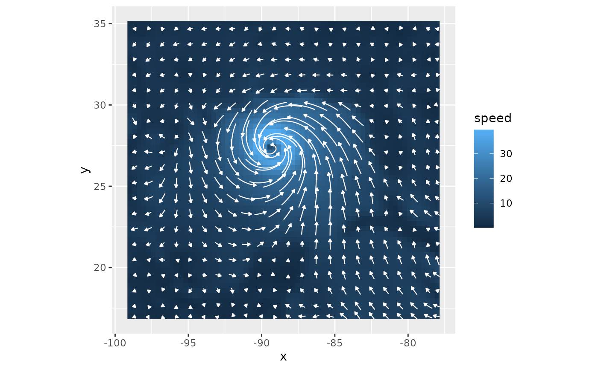
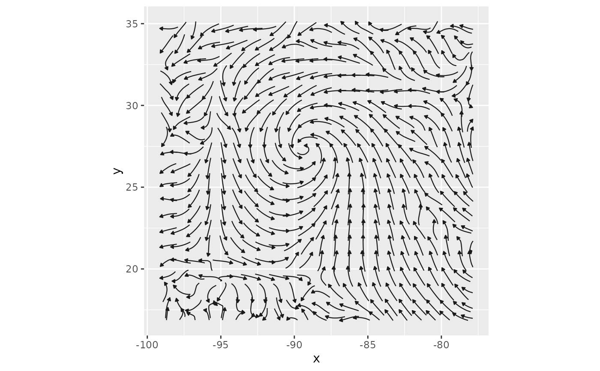
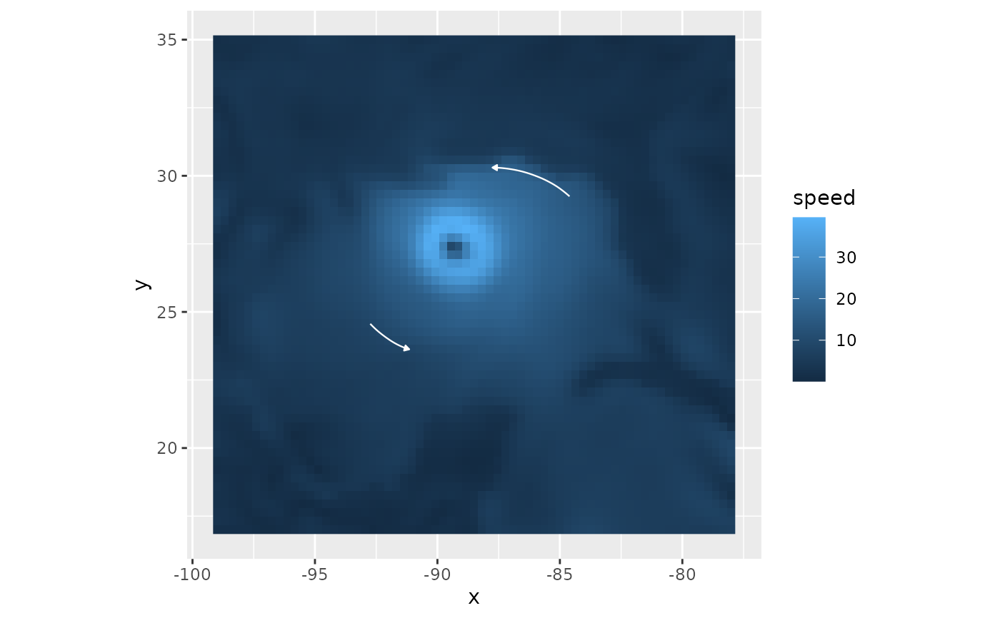
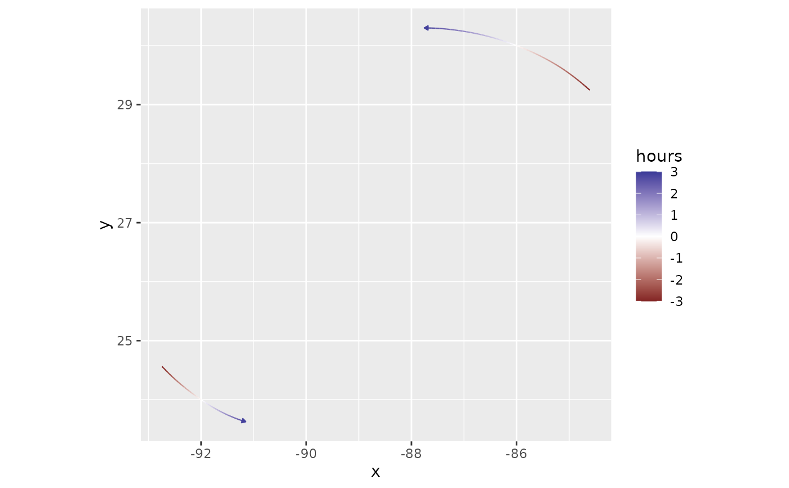

Wind trails and streamlines
geom_wind_trail.RdDraw trails that follow the airflow through a wind field, each with an arrowhead at its
downwind end. Trails are computed from the field with wind_trails(), seeded on a regular
grid (or at points you supply) and traced upwind and downwind; trails traced through a single
wind field are streamlines. geom_wind_trail() and stat_wind_trail() make the same layer,
differing only in which argument, stat or geom, can be changed. To draw trails you already
have, such as wind_trails() or least_cost_paths() output, use geom_wind_path().
Usage
geom_wind_trail(
mapping = NULL,
data = NULL,
stat = StatWindTrail,
position = "identity",
...,
seeds = NULL,
res = 20,
fixed_length = FALSE,
length = 1.5,
hours = NULL,
direction = c("both", "downwind", "upwind"),
steps = 20,
wrap = c("neither", "horizontal", "vertical", "both"),
arrow = grid::arrow(length = grid::unit(0.1, "cm"), type = "closed"),
na.rm = FALSE,
show.legend = NA,
inherit.aes = TRUE
)
stat_wind_trail(
mapping = NULL,
data = NULL,
geom = GeomWindTrail,
position = "identity",
...,
seeds = NULL,
res = 20,
fixed_length = FALSE,
length = 1.5,
hours = NULL,
direction = c("both", "downwind", "upwind"),
steps = 20,
wrap = c("neither", "horizontal", "vertical", "both"),
arrow = grid::arrow(length = grid::unit(0.1, "cm"), type = "closed"),
na.rm = FALSE,
show.legend = NA,
inherit.aes = TRUE
)Arguments
- mapping
Aesthetic mappings created by
ggplot2::aes().xandy(coordinates, in degrees longitude and latitude) must be mapped, usually in the plot's main call. The wind componentsuandvare mapped automatically to columns of the same names, as produced byfortify()on awind_field(see fortify.windscape).- data
A
wind_field, which is converted withfortify(), or a data frame like itsfortify()output. Default is to inherit the plot's data. The data must have one wind vector per grid cell in each panel and group, so to plot awind_series, select a time step withsubset_series()or facet bytime.- stat, geom
Use to override the default pairing of stat and geom.
- position
Position adjustment; see
ggplot2::layer().- ...
Other arguments passed to
ggplot2::layer(), such as fixed aesthetics likecolor = "white"orlinewidth = 0.8.- seeds
Starting points for trails.
NULL(the default) seeds one trail at the center of each block of grid cells (seeres). Alternatively, a two-column matrix of longitude and latitude, e.g. to trace trails from study sites; the same seeds are used in every panel.- res
Approximate number of seeds along the longer side of the data's extent, when
seeds = NULL. Seeds are placed at the centers of blocks of grid cells that are approximately square in km. Also sets the spacing used bylength. Default 20.- fixed_length
Logical: give all trails the same length, so they show only direction (streamlines)? Default
FALSE: trails span the same transport time, so their length is proportional to wind speed, as forgeom_wind_arrow(). In fields with very uneven speeds,TRUEshows flow structure more evenly, since trails in calm areas don't shrink.- length
Length of each trail, as a multiple of the spacing between seeds set by
res. Withfixed_length = FALSE, this is the length of a trail at the 90th percentile of wind speed, unlesshoursis given. Default 1.5.- hours
With
fixed_length = FALSE, transport time in hours spanned by each trail, in place oflength, so that trails show actual transport distance (assuming wind speeds in m/s). DefaultNULL.- direction
Trace trails
"both"ways from each seed (the default), only"downwind", or only"upwind".- steps
Number of integration steps per trail; more gives smoother trails. Default 20.
- wrap
Wrap trails across the field's edges; see
wind_trails(). Default"neither".- arrow
Arrowhead drawn at the downwind end of each trail, created by
grid::arrow(), orNULLfor none.- na.rm, show.legend, inherit.aes
See
ggplot2::layer().
Details
Trails are traced with wind_trails(), using bilinear interpolation of the wind field, and
stop where they leave the field (unless wrapped), so trails seeded near the edges can be
shorter; extend the field beyond the area of interest to avoid this. They are computed in
longitude/latitude coordinates with correct directions and lengths in km; use
ggplot2::coord_quickmap() or ggplot2::coord_sf() with a longitude/latitude CRS. Seeds and
trail lengths are set once for the whole layer, so faceted panels are comparable.
Computed variables
speed: wind speed at each point along the trail, in the units ofuandv.t: integration step, negative upwind of the seed and positive downwind.hours(withfixed_length = FALSE) orkm(withfixed_length = TRUE): signed transport time or distance from the seed.progress: position along the trail from its upwind end (0) to its downwind end (1).
Examples
library(ggplot2)
katrina <- windscape_example("wind_field")
# trails over wind speed, with length proportional to speed
ggplot(katrina, aes(x, y)) +
geom_raster(aes(fill = speed)) +
geom_wind_trail(color = "white") +
coord_quickmap()

# streamlines: equal-length trails showing direction only
ggplot(katrina, aes(x, y)) +
geom_wind_trail(fixed_length = TRUE) +
coord_quickmap()

# 6 hours of transport from two sites
sites <- cbind(c(-92, -86), c(24, 30))
ggplot(katrina, aes(x, y)) +
geom_raster(aes(fill = speed)) +
geom_wind_trail(seeds = sites, hours = 6, steps = 50, color = "white") +
coord_quickmap()

# color trails by a computed variable: transport time from the seed
ggplot(katrina, aes(x, y)) +
geom_wind_trail(aes(color = after_stat(hours)), seeds = sites, hours = 6, steps = 50) +
scale_color_gradient2() +
coord_quickmap()
